One app for every visitor to Badami, Pattadakal, Aihole and the whole of Bagalkote district — in Kannada, Hindi and English, and it keeps working inside the caves with no signal.
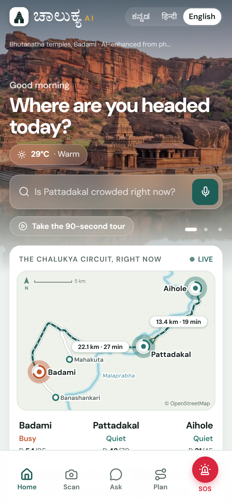
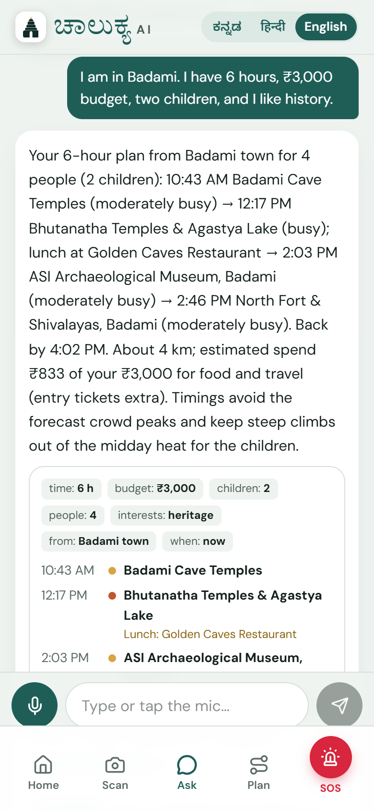
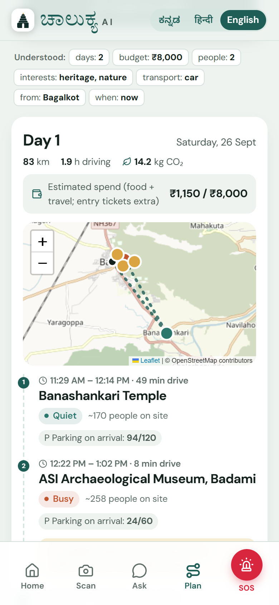
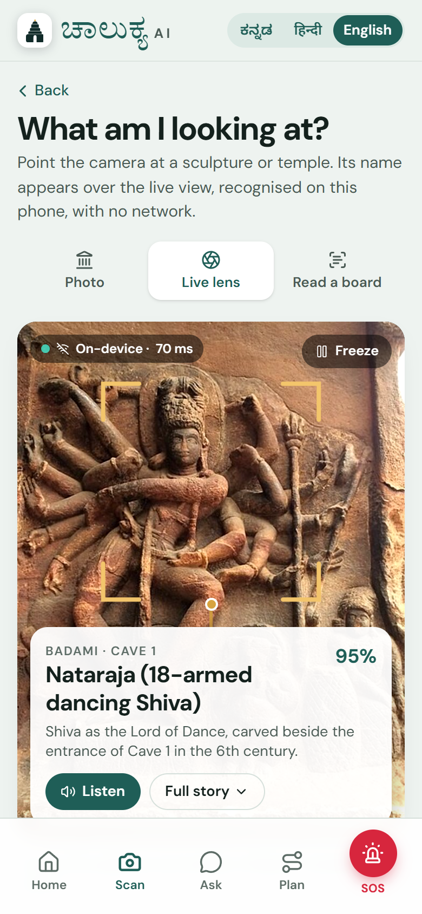
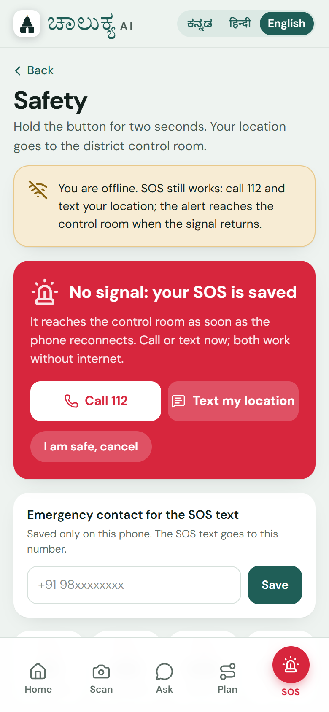
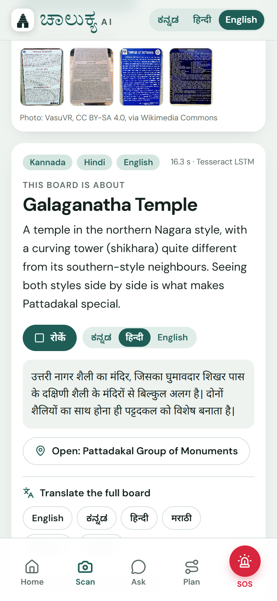
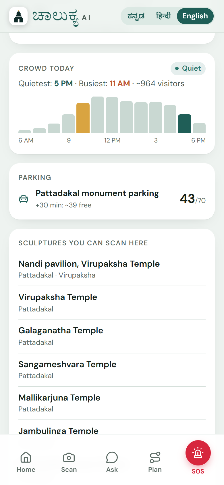
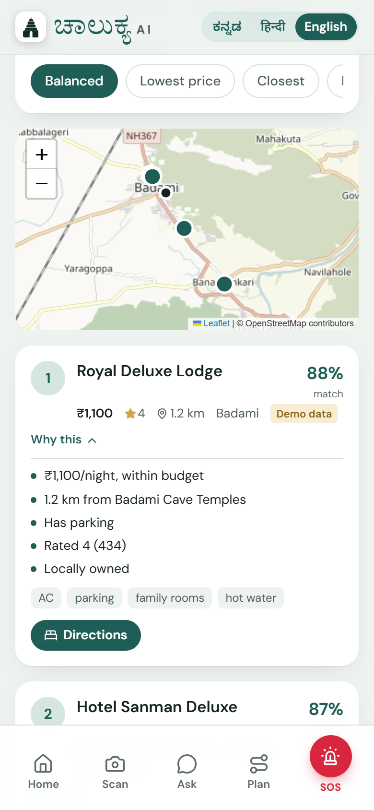
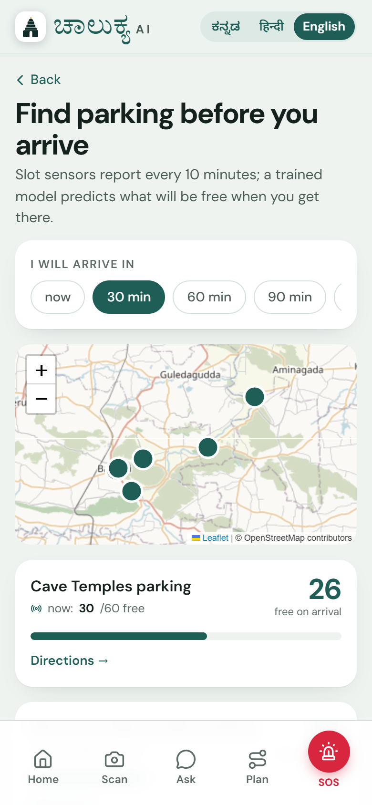
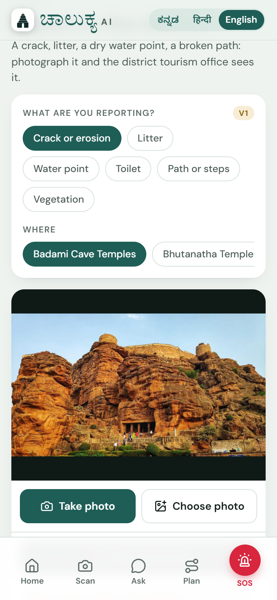
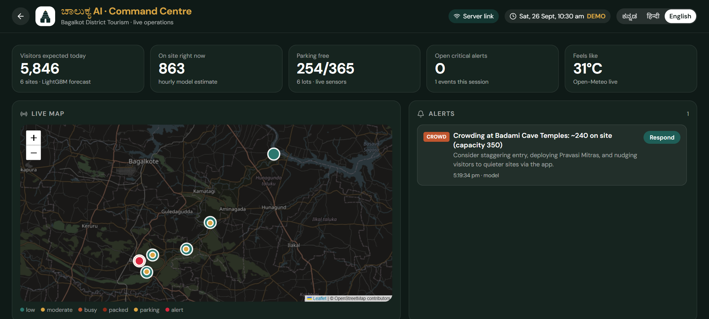
Live command centre: visitors expected, people on site now, free parking, open alerts, feels-like heat and the live map.
Honest by design. Real: monument photographs from Wikimedia Commons, ASI's annual visitor numbers, OpenStreetMap places and roads, the district's tourism pages, live weather. Simulated and labelled inside the app: the hour-by-hour crowd shape (calibrated so the yearly totals match ASI), parking sensor streams, business prices. Version 1 means working today at a simpler depth — the app says so on the screen. Sheet 2 gives the method, the datasets and the test scores behind every line above.
Built by Chinmay R M & Sandesh Joshi · BVVS Basaveshwar Engineering College, Bagalkote
github.com/framemindaistudio/chalukya-ai · works offline after the first visit · no accounts, no ads, no tracking
scan it,
try it now